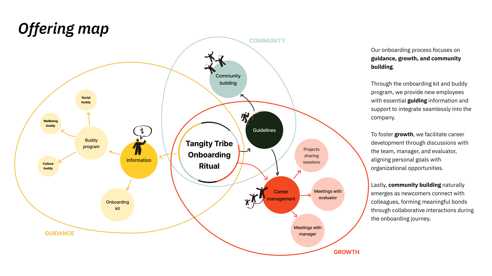

服务设计 · 共创工作坊
Tangity Tribe
NTT Data / Tangity 员工入职仪式体验设计
背景
这是一项旨在从员工入职之初便建立强烈社群归属感、提升员工幸福感的服务设计。以「部落」（Tribe）为核心隐喻，提供结构化入职流程，将共同仪式体验作为连接纽带。这些仪式分布于为期一个月旅程中的十一个里程碑节点，通过培育连接感、归属感与互助支持，让新员工真正感受到被欢迎与融入。
01
入职包
02
欢迎仪式
03
团队介绍
04
文化探索
05
导师配对
06
协作项目
07
技能分享
08
社群聚会
09
反馈循环
10
成长回顾
11
部落认证
问题定义
多代际全球团队中存在四大核心挑战：入职流程碎片化、指引不清晰、早期人际连接薄弱，以及员工福祉项目利用率低下。
方法：洞察驱动的问题重构 → 以仪式与社群原型工具进行参与式共创工作坊。
重构后的设计问题（HMW）
我们如何在提供清晰入职引导的同时，从第一天起便开始构建真实的团队社群？

图 1. 通过访谈与共创推进的挑战框架与重构路径。

图 2. 用于收集利益相关方洞察与创意种子的共创工作坊。
设计过程
服务概念从利益相关方地图与用户画像对齐出发，逐步演化为以仪式为核心的入职旅程与触点系统。

图 3. 围绕入职仪式的服务提供地图与价值生态系统。

图 4. 明确各方关系与支持节点的利益相关方地图。
查看用户画像与旅程地图

图 5. 针对入职需求与痛点定义的用户画像。

图 6. 从入职礼包到社群参与的旅程地图。
界面与触点
多触点礼包将策略转化为实用的入职物料，包括用于团队引导的卡片、地图与仪式道具。

图 7. 最终触点礼包与入职激活原型物料。
项目成果
Tangity Tribe 提供了更清晰的入职框架，有效改善了情感融入体验、跨团队连接质量，以及员工在企业文化中的共同参与度。